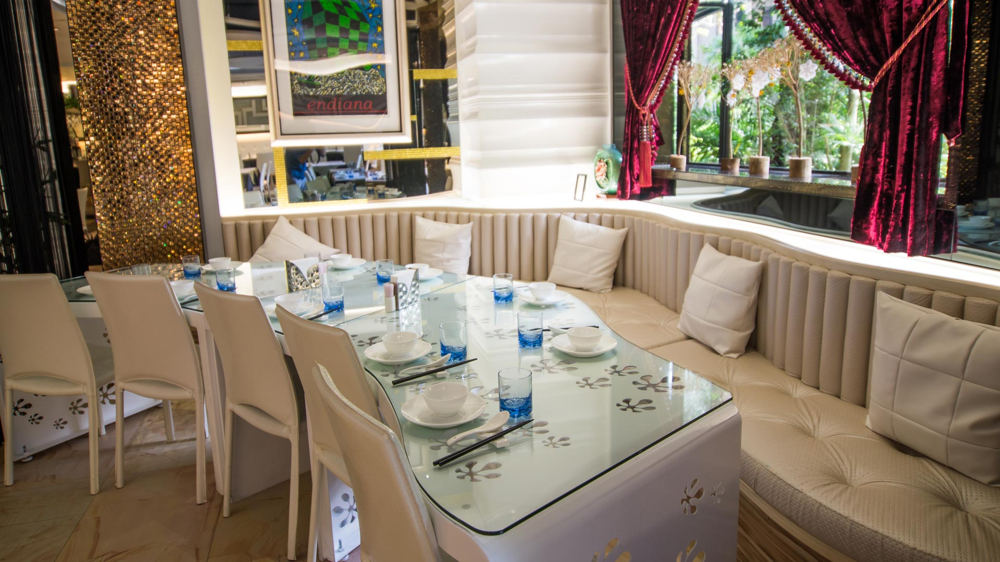
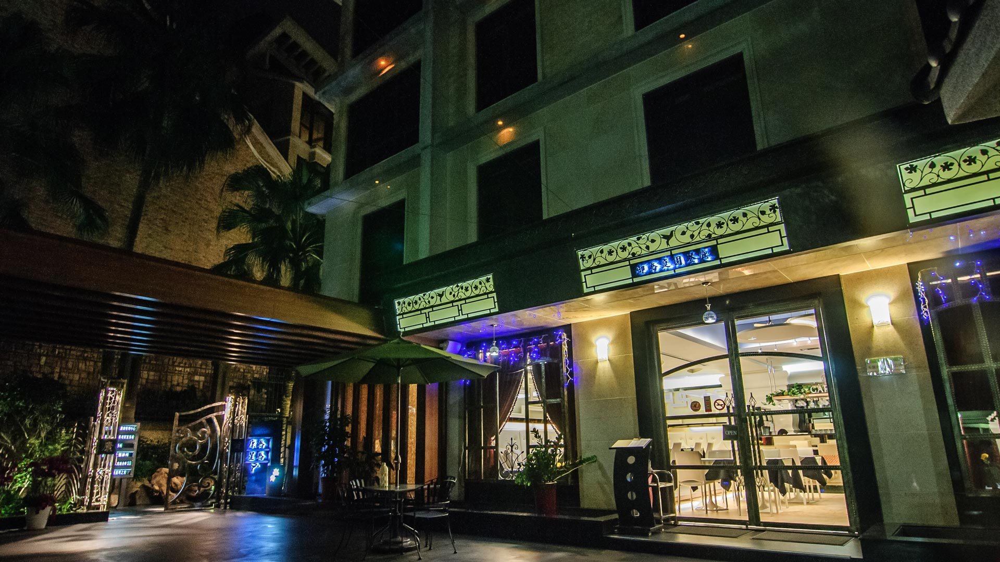
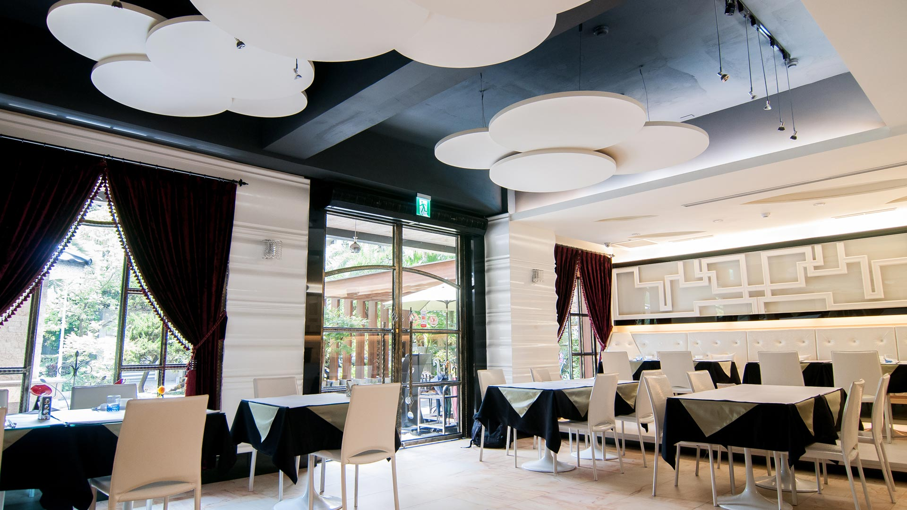

Dining Area

美食料理
御喬庭園餐飲店不定期推出主廚創意料理，融合異國風味的美食佳餚，完全不使用味精調味，以當季食材現點現做的養生美食，打動味蕾輕鬆無負擔。此外，餐廳還提供宴會服務，精緻優美的宴客環境，健康獨特的美食饗宴，能滿足大宴小酌需求。

御喬庭園餐飲店不定期推出主廚創意料理，融合異國風味的美食佳餚，完全不使用味精調味，以當季食材現點現做的養生美食，打動味蕾輕鬆無負擔。此外，餐廳還提供宴會服務，精緻優美的宴客環境，健康獨特的美食饗宴，能滿足大宴小酌需求。